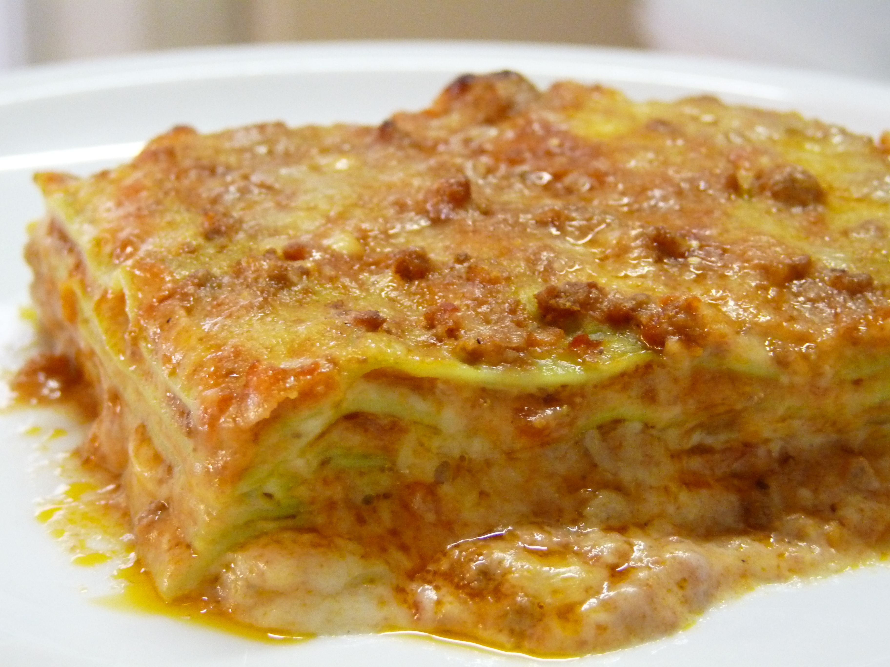

Lasagna

Description
Lasagna is a classic Italian dish made by layering sheets of pasta with a rich meat sauce, creamy béchamel or ricotta cheese, and grated mozzarella or Parmesan. The meat sauce typically includes ground beef or pork sautéed with onions, garlic, and tomatoes, often seasoned with herbs like basil and oregano. The pasta sheets—either fresh or pre-cooked—are alternated with layers of the sauce and cheese in a baking dish, usually finishing with a generous topping of cheese. The assembled dish is then baked in the oven until the top is golden and bubbling, resulting in a hearty, comforting meal.
Ingredients
For meat sauce
- 2 tablespoons olive oil
- 1 onion, finely chopped
- 2-3 garlic cloves, minced
- 500g ground beef
- 2 tablespoons tomato paste
- Salt and pepper to taste
For the meat sauce
- 250g ricotta cheese or 2 cups bēchamel sauce
- 1 egg (optional)
- 1/2 cup grated parmesan cheese
- 2 cups shredded mozzarella cheese
For assembly
- 9-12 lasagna pasta sheets
- Extra parmesan and mozarella for topping
Steps
Prepare the meat sauce
- Heat 2 tablespoons of ollive oil in a pan over medium heat
- Sautē 1 chopped onion and 2-3 minced garlic cloves until soft
- Add around 500g of ground beef and cook until browned
- Stir in 2 tablespoons tomato paste, 400g crushed tomatoes, 1 tsp oregano, 1 tsp basil, salt and pepper
- Simmer on low heat for 20-30 minutes, stirring occasionally
Prepare the cheese filling
- In a bowl, add 250g ricotta cheese with 1 egg and 1/2 cup grates parmesan
- Season lightly with salt and pepper. Set aside
Assemble the lasagna
- Preheat oven to 180℃ (350℉)
- Spread a thin layer of meat sauce on the bottom of the baking dish
- Layer with lasagna sheets, then spread some ricotta mixture, add a layer of meat sauce, and sprinkle mozarella
- Repeat layers (pasta→cheese→sauce→mozzarella) until ingredients are used up
Bake
- Cover the dish woth foil
- Bake for 25 minutes covered, then remove foil and bake another 15-20 minutes uncovered, until golden and bubbly
Rest and Serve
- Let the lasagna rest for 10-15 minutes before slicing
- Garnish with fresh basil if desired
Home